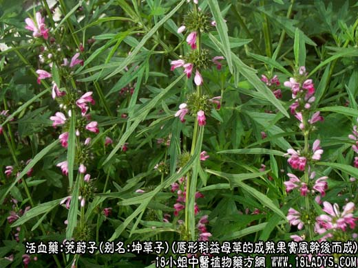
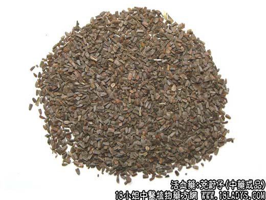
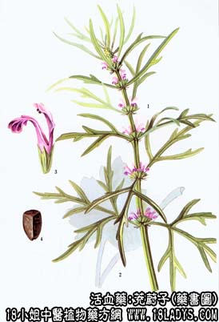

由唇形科植物益母草的成熟果实风干后而成。具有活血调经、清肝明目的功能。炒后有活血调经之效。
别名：益母草子、坤草子、小胡麻（湖北、山东、上海等地）。
来源：为益母草的干燥成熟果实。
产地：全国各地均有生产。
性状鉴别：小坚果呈三棱形，一端稍宽，似平截状，他端尖窄而钝尖，长约2～3毫米，宽约1.5毫米。表面灰棕色，具深色斑点，无光泽。果皮薄，破开，内仁白色，显油性。气无，味苦。以颗粒饱满，洁净者为佳。
主要成分：含三种生物硷，名茺蔚硷 I、II、III，又含茺蔚子油（主成分为油酸）和维生素A类物质。
炮制：生用。
性味：甘、微寒。
功效与作用：功用与益母草基本相同，但在破瘀之中兼有一定收敛作用。在行血的同时又兼有一定补益作用，适宜治月经过多或血崩不止，常与止血药如血余炭、当归炭同用。此外，又能除风热、去翳膜、明目（可能与所含维生素A类物质有关）。
用量：9～15g。
处方举例：代表为茺蔚子丸《审视瑶函》：茺蔚子、泽泻各4.5g，川连、杞子、枳壳、青葙子、生地各30g，煅石决明、麦冬、细辛、车前子各60g，研为细末，炼蜜为丸，如梧桐子大，每服9g，食后米汤水送下，治患传染病后体虚眼花目暗和有翳膜。
注意：茺蔚子不宜多服，过量易中毒。有报道谓服茺蔚子粉70g左右，能引起中毒症状，全身无力，酸麻疼痛，甚或出汗虚脱，要服赤豆、绿豆、甘草汤解毒。